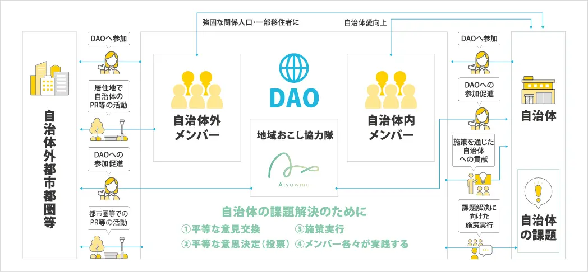
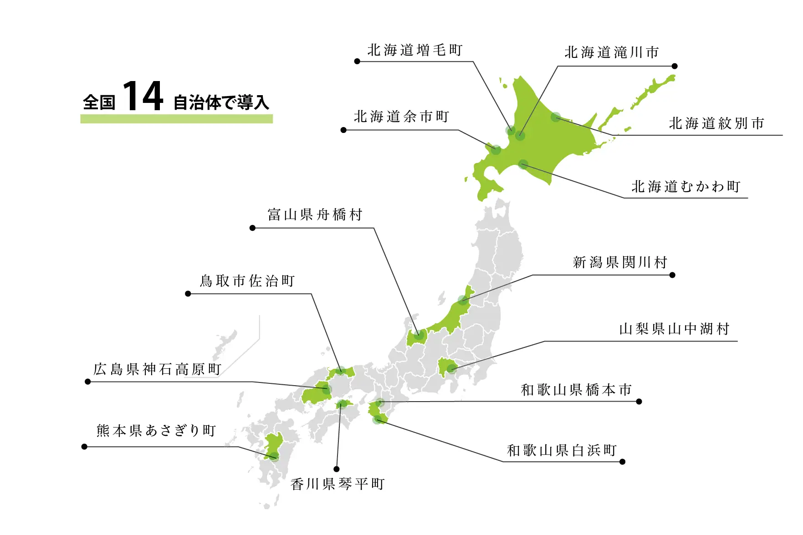

Web3.0が拓く、地方創生の新たな地平：地域おこし協力隊DAOであなたのまちを活性化する
エグゼクティブサマリー
人口減少、高齢化、そして経済の停滞...。私たちの地方が直面する課題は、ますます深刻化しています。従来の地方創生策だけでは、なかなか解決の糸口が見えない...そう感じていませんか？
しかし、今、Web3.0という新たなテクノロジーが、地方創生に革命をもたらそうとしています。その中心にあるのが、株式会社あるやうむが提唱する「地域おこし協力隊DAO」モデルです。
「地域おこし協力隊DAO」とは、一体何なのでしょう？
この革新的な取り組みは、総務省が推進する既存の国家制度「地域おこし協力隊」に、Web3.0時代の最先端技術であるDAO（分散型自律組織）の概念を融合させた、これまでにない地方創生モデルです。
具体的には、都市部から地域に移住した協力隊員が「DAOマネージャー」という新たな役割を担います。彼らの主たるミッションは、その地域をテーマにしたデジタルコミュニティ（DAO）を立ち上げ、運営すること。このDAOは、コミュニケーションツールであるDiscordを主な活動拠点とし、地域住民だけでなく、地域外、さらには海外にいるその地域のファンや応援したい人々を巻き込みます。
最終的な目標は、このデジタルコミュニティを通じて活発な交流と共創を生み出し、強固な「関係人口」を創出することで、地域が抱える課題を解決し、持続的な活性化を実現することなのです。
自治体の負担を最小化する、あるやうむの「ワンストップ・ソリューション」
「Web3.0？ DAO？ 難しそう...」「専門知識を持つ人材なんて、うちの自治体にはいない...」そう思われたかもしれません。多くの地方自治体が、人員不足や専門知識の欠如といった課題を抱えていることは、株式会社あるやうむも深く理解しています。
そこで、あるやうむは、自治体の皆様がDAO導入に伴う負担を最小化するための「一気通貫」のサービスパッケージを提供しています。
- 適任者の募集・選定: 従来の地域おこし協力隊制度では、隊員と地域の間の期待値のミスマッチが大きな課題でした。あるやうむは、Web3.0やコミュニティ運営に関する高いリテラシーと、地方創生への強い意欲を兼ね備えた人材をリスト化し、各自治体の課題や特性に最適な人材をマッチングさせます。これにより、ミスマッチのリスクを大幅に低減します。
- 着任中の手厚いサポート: DAOマネージャーは地域で孤立することはありません。あるやうむは、自社で運営するオンラインコミュニティ『シン地方DAO』を通じて、継続的な支援を行います。このコミュニティには、Web3.0や地方創生に関心を持つ約500名のメンバーや専門家が在籍しており、DAOマネージャーは日々の活動で直面する専門的な課題について相談したり、企画のアイデアを壁打ちしたりすることができます。成功事例や失敗事例といったナレッジが共有されるこの仕組みは、DAOマネージャーにとっての心理的安全性を確保し、モチベーションを維持する上で決定的な役割を果たします。詳細はVoicyや公式Xでも発信されています。
- デジタル技術の提供: あるやうむは、DAO運営の技術的な基盤も提供します。具体的には、コミュニケーションのハブとなるDiscordサーバーの最適な設定や、活動のフェーズに応じた機能追加を支援する。また、コミュニティのエンゲージメントを高めるためのNFTの発行・配布・活用についても、同社のふるさと納税NFT事業で培ったノウハウを活かしてサポートします。
このアプローチは、先行事例が直面した運営上の困難を、体系的かつ専門的な枠組みで解決しようとする、洗練された後継モデルと言えるでしょう。
すでに全国で成果を上げている「地域おこし協力隊DAO」の事例
この革新的なモデルは、すでに全国各地の自治体で導入され、具体的な成果を上げ始めています。
- 北海道余市町: 地域の魅力であるウイスキーなどをテーマに、世界的なDAOのコアメンバーがDAOマネージャーとして着任。ワークショップの修了証としてNFTを発行するなど、デジタルな証明がリアルな体験と結びついています。（関連プレスリリース）
- 和歌山県白浜町: オフシーズンの誘客やワーケーション推進を目指し、Web3とリアルイベントの経験豊富な人材が着任。地元店舗と連携したNFT開発やコミュニティFMでの情報発信を行っています。（関連プレスリリース）
- 富山県舟橋村: 日本一小さな村の魅力発信と関係人口創出のため、舟橋村DAOを運営。SNSを活用した広報活動を展開しています。
- 鳥取県鳥取市佐治町: デジタル応援団の巻き込みや脱炭素の取り組み推進のため、佐治DAOを作成・運用。インフルエンサーがDAOマネージャーとして着任し、SNSでのシティプロモーションを強化しています。（関連プレスリリース）
これらの事例は、地域おこし協力隊DAOが単なるデジタル上の活動に留まらず、リアルな地域経済の活性化、そして持続的な関係人口の創出に繋がることを証明しています。従来の協力隊制度が抱えていた「ミスマッチ」や「孤立」といった課題を、あるやうむの専門的なサポートとコミュニティが解決し、より効果的な地方創生を実現しているのです。

あなたの自治体にもたらされる、計り知れないメリット
地域おこし協力隊DAOの導入は、貴自治体に以下のような多大なメリットをもたらします。
- 新たな財源の確保: ふるさと納税NFTなど、Web3.0を活用した新しい資金調達の道が開かれます。これは、従来の寄付とは異なる、持続的な関係性を生み出す可能性を秘めています。
- 地域ブランド力の飛躍的向上: 先端技術であるWeb3.0を活用することで、貴自治体は若年層やデジタルに強い層へのPR効果を飛躍的に高めることができます。
- 持続的な関係人口の創出: 一過性の観光客ではなく、地域に継続的に関わるファンをデジタルで組織化し、地域の活力へと繋げます。彼らは、貴自治体の新たな「応援団」となるでしょう。
- 専門人材の確保: Web3.0やコミュニティ運営の専門知識を持つDAOマネージャーが、貴自治体のデジタル化を強力に推進します。
- 法務・税務上の安心: DAOの法的・税務的な位置づけはまだ発展途上ですが、あるやうむが中央集権的な仲介者として機能することで、貴自治体はこれらの複雑なリスクから解放され、安心してプログラムを導入できます。
未来の地方創生は、もう始まっています。あなたのまちも、Web3.0の波に乗ってみませんか？
「うちのまちでも、本当にできるのだろうか...」そう不安に思われるかもしれません。しかし、まずは小さな一歩から踏み出すことが重要です。あるやうむは、自治体の皆様がWeb3.0の可能性を実感できるよう、様々な段階でのサポートを提供しています。
例えば、まずは「ふるさと納税NFT」のような、比較的導入しやすいサービスから、その効果を実感してみてはいかがでしょうか。デジタル技術を活用した新たな地方創生の形は、すでに現実のものとなり、全国各地でその芽を出し始めています。
未来の地方創生は、もう始まっています。ぜひ、株式会社あるやうむにご相談ください。あなたのまちの可能性を、Web3.0の力で最大限に引き出しましょう。